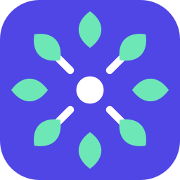

ThinkBoardYour Obsidian canvas, over everything.
Summon a board directly above your desktop with a hotkey or a gesture.
Similar to the old macOS Dashboard. Open your existing Obsidian vault's boards, or run
standalone. Cards, links, Markdown and pictures, saved straight back to the .canvas file.
Infinite space. Zero clutter.
Grow your board as far as you need. ThinkBoard uses smart clustering — zooming out collapses groups of cards into single, named clusters. Pinch in and the cards come back.
Built for AI: the board is the prompt.
If you hook up AI, choosing Ask AI on any card sends the entire chain of cards leading to it as the prompt. Nothing to explain in a chat: the context is already on the board.
Think messy. Tidy in one click.
Dump your thoughts on the board, then select them and choose Auto-layout to tidy up in left-to-right or top-to-bottom order.
Or turn on Auto-layout in the board's menu, and each card will place itself automatically.
Make it yours, a keystroke away.
⌘K opens the command palette with quick access to every function and every setting. Choose from built-in themes — or let ThinkBoard pick up your vault's own Obsidian theme by itself.
## features
Features
Summon over anything
An overlay above every window, on a global hotkey or a four-finger swipe. Esc puts it away.
Fast to build
Drag out of a card's edge to make the next one, type Markdown in place, auto-layout to tidy.
Your whole vault
⌘O lists every board in the vault, newest first, with fuzzy search. Its notes and pictures drop straight onto a board.
Command palette
⌘K or ⌘P for every action and every setting, its shortcut beside it.
macOS niceties
Pinch to zoom, swipe with four fingers to summon, your wallpaper behind the board.
Keyboard all the way
Arrows move between cards by where they sit, Tab adds a linked one, Enter edits.
Make it yours
Ten built-in themes, previewed live — or your vault's own Obsidian theme, followed by itself.
## obsidian
Plain .canvas files
Boards are Obsidian's own canvases. ThinkBoard edits them in place and keeps every field it doesn't use, so the file stays as Obsidian writes it. Keep the same board open in both: a change on either side is merged card by card, never written over, and a rename in Obsidian is followed.
~/Vault/Trips/Kyoto.canvas
## ask ai (optional)
Ask AI
Off until you choose a provider. Run a model on your own machine with LM Studio or Ollama, or paste a key for OpenAI, OpenRouter, Groq, Together AI, Fireworks AI, Mistral or DeepSeek.